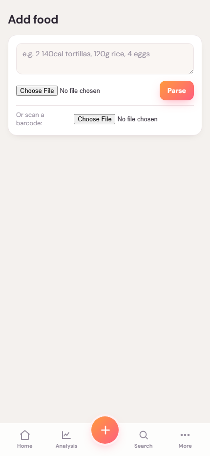
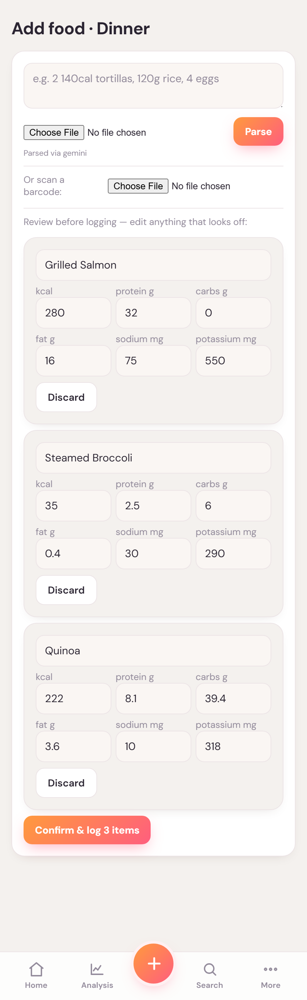
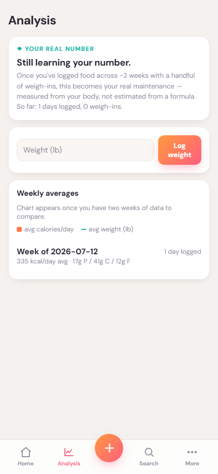

Full-stack application · July 2026 to present
AI Nutrition Tracker App
I am building a mobile-first nutrition app that combines traditional tracking with LLM meal entry: describe a meal in text or use a photo, then review the result before saving.
- Role
- Independent developer
- Problem
- Traditional food logging takes too much manual entry
- My contribution
- Mobile product, Supabase backend, editable meal records, analysis, and tracking workflows
- State
- Active development; LLM meal entry in progress
Current product
The tracking foundation
Swipe or scroll to inspect each screen.




Product direction
Two ways to log, one daily record
DetailedTraditional trackingAdd and edit nutrition fields directly.
FasterLLM meal entryUse text or a photo with less manual entry.
ReviewConfirm the resultCorrect foods and values before saving.
TrackOne daily recordCalories, macros, nutrients, and trends.